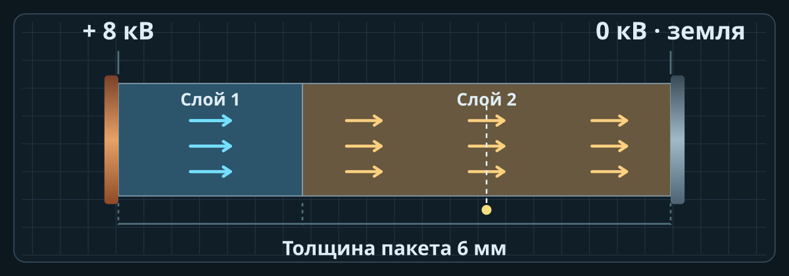
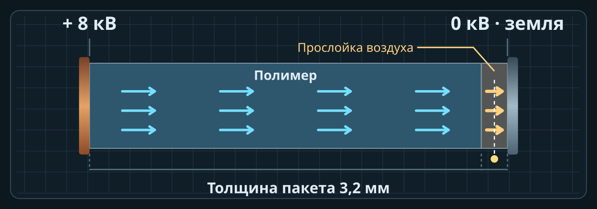
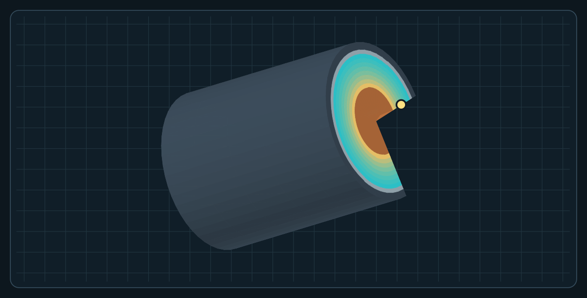

Тема 7 · занятие 1 · выбор изоляции двигателя 6 кВ с ПЧ · 90 минут
Цель — выполнить предварительный выбор системы корпусной изоляции двигателя и обосновать, какие измерения и документы потребуются для подтверждения решения.
Ситуация и исходные данные
Двигатель 6 кВ питается от ПЧ через кабель. Номинальное напряжение 6 кВ — действующее линейное. Пик фаза–корпус Û в таблице — отдельное исходное значение учебного варианта. Скорость фронта в кабеле принята v = 160 м/мкс.
| Вариант | Uном, кВ | Кабель L, км | Фронт tф, мкс | Пик Û, кВ | Горячая точка, °C |
|---|---|---|---|---|---|
| А | 6,0 | 0,30 | 0,20 | 8,0 | 140 |
| Б | 6,0 | 0,40 | 0,15 | 9,0 | 150 |
| В | 6,0 | 0,25 | 0,25 | 7,5 | 146 |
| Г | 6,0 | 0,45 | 0,10 | 10,0 | 158 |
| Д | 6,0 | 0,35 | 0,20 | 8,5 | 166 |
Три предложения поставщика
| Пакет | Слой 1 | Слой 2 | Класс системы | Предел импульса* | Цена |
|---|---|---|---|---|---|
| 1 | 2 мм, εᵣ = 4 | 4 мм, εᵣ = 6 | F (155 °C) | Нет данных | 1,00 |
| 2 | 3 мм, εᵣ = 4 | 3 мм, εᵣ = 6 | F (155 °C) | 9,5 кВ | 1,15 |
| 3 | 3 мм, εᵣ = 4 | 3 мм, εᵣ = 6 | H (180 °C) | 11,5 кВ | 1,32 |
* Условный предел повторяющегося пика фаза–корпус для заданного фронта и режима. Все предложения и цифры учебные. Для предварительного отбора используйте условный критерий Eᵢ ≤ 2,10 кВ/мм и запас 10 °C между температурой горячей точки и числом класса. Выберите вариант с наименьшей ценой среди отвечающих всем критериям и имеющих подтверждение по импульсу.
Как распределить время
10 минут на постановку задачи, 35 на расчёт, 20 на тренажёр, 15 на обоснование выбора и 10 на защиту.
Ход работы и форма сдачи
1 Условия отражения
Переведите L в метры. Рассчитайте τ = L/v и сравните 2τ с tф. Проверьте условие 2τ ≥ tф: фронт успевает сформироваться до прихода корректирующего отражения при простейшей модели линии. Наличие отражения определяется рассогласованием, его амплитуду по одному этому условию не находят. Для его амплитуды используйте заданный Û. Для расчёта по волновой модели нужны параметры кабеля и нагрузки.
2 Поле в предложенных пакетах
Для каждого пакета рассчитайте S = Σdᵢ/εᵣᵢ, Eᵢ = Û/(εᵣᵢS), ΔUᵢ = Eᵢdᵢ. Проверьте баланс. Укажите запас по полю и сравните с учебным пределом.
3 Проверка в тренажёре
Выберите «Два слоя». Введите заданный пик и параметры пакета. Сравните таблицу с расчётом и приложите графики E(x), φ(x). Для шага ползунка U = 0,5 кВ все исходные пики вводятся точно.
4 Отбор пакета
Проверьте три условия: поле в обоих слоях, тепловой запас и предел повторяющегося импульса. Укажите выбранный пакет и причину отклонения каждого другого.
5 Что нужно для решения по реальной машине
Разделите три задачи. Уточнить состояние установленной машины по ПУЭ, п. 1.8.15. Сверить импульсные пределы системы с данными изготовителя и применимой квалификацией. Уточнить охлаждение, фактический нагрев и устойчивость технологии пропитки.
Сдаваемый результат
| Пакет | E₁ / E₂ | ΔU₁ / ΔU₂ | Запас, °C | Импульс | Вывод |
|---|---|---|---|---|---|
| 1 | ____ | ____ | ____ | ____ | ____ |
| 2 | ____ | ____ | ____ | ____ | ____ |
| 3 | ____ | ____ | ____ | ____ | ____ |
Приложите графики и краткий вывод. Оценивание из 10 баллов: отражение — 2, поле и баланс — 3, графики — 2, обоснование выбора и нормативные основания — 3.
Источники для защиты
1. Важов В. Ф., Лавринович В. А. Техника высоких напряжений. ТПУ, 2014. § 1.2.2.1, с. 57–60, рис. 1.34–1.37, табл. П1.3
3. ГОСТ 8865-93 · нагревостойкость материалов и систем изоляции
4. ПУЭ, 7-е изд., гл. 1.8, п. 1.8.15 · приёмо-сдаточные испытания двигателей переменного тока
7. IEC 60034-18-42:2017+A1:2020 · квалификация систем типа II для питания от преобразователя
8. Siemens. Requirements placed on third-party motors, 09/2020, § 7.3, рис. 7-3
Занятие 2 Поле в воздушной прослойке
Расчётная лабораторная работа на 45 минут. Цель — проверить, как толщина воздушной прослойки влияет на местное поле и на долю приложенного напряжения. Используйте тренажёр во вкладке «Поле по слоям».
Порядок расчёта и опыта
Примите dпол = 3 мм, εᵣ,пол = 4, εᵣ,возд = 1. Сначала вычислите Eпол, Eвозд и ΔUвозд при U = 8 кВ для трёх толщин. Затем установите эти параметры в тренажёре и сверяйте поле и падение напряжения отдельно.
| dвозд, мм | Eпол, кВ/мм | Eвозд, кВ/мм | ΔUвозд, кВ | ΔUвозд/U, % |
|---|---|---|---|---|
| 0,10 | ____ | ____ | ____ | ____ |
| 0,20 | ____ | ____ | ____ | ____ |
| 0,40 | ____ | ____ | ____ | ____ |
Установите dвозд = 0,20 мм. Повторите опыт при 4, 8 и 12 кВ. Сохраните графики E(x) и φ(x) для двух крайних значений U. Объясните, почему относительная доля ΔUвозд/U одинакова при всех трёх напряжениях.
Обсуждение результатов
Ответьте письменно. Как меняются Eвозд и ΔUвозд при увеличении dвозд при том же U? Почему этих результатов недостаточно, чтобы определить факт зажигания ЧР? Какие свойства включения потребуется дополнительно задать?
Кадры для сверки результатов

Занятие 1, пакет 1 варианта А. Вкладка «Поле по слоям»: 8 кВ, d₁ = 2 мм, d₂ = 4 мм, εᵣ₁ = 4, εᵣ₂ = 6.
Выберите измерительную точку в каждом слое. Для пакета 1 сравните 1,71 и 1,14 кВ/мм с ручным расчётом. Затем выберите границу. Её потенциал относительно земли равен ΔU₂ ≈ 4,57 кВ.

Занятие 2. Полимер 3 мм, воздух 0,20 мм, U = 8 кВ. Разрез из вкладки «Поле по слоям».
Проверьте, что поле в воздухе около 8,42 кВ/мм. Падение напряжения на воздухе около 1,68 кВ. Стрелки показывают направление поля. Узкая полоса справа соответствует воздушному слою.
Самостоятельная работа в тренажёре
1 Напряжение и материалы
Откройте «Поле по слоям». При d₁ = 2 мм, d₂ = 4 мм, εᵣ₁ = 2, εᵣ₂ = 4 установите 12, 24 и 48 кВ. Запишите E₁, E₂, ΔU₁, ΔU₂ и φ на границе. Затем при 24 кВ поменяйте εᵣ слоёв местами. Сравните результаты и объясните, куда смещается максимум поля.
| U, кВ | εᵣ₁ / εᵣ₂ | E₁ / E₂, кВ/мм | ΔU₁ / ΔU₂, кВ | φ границы, кВ |
|---|---|---|---|---|
| 12 | 2 / 4 | ____ | ____ | ____ |
| 24 | 2 / 4 | ____ | ____ | ____ |
| 48 | 2 / 4 | ____ | ____ | ____ |
| 24 | 4 / 2 | ____ | ____ | ____ |
2 Радиальный профиль кабеля
В «Кабель 3D» оставьте a = 8 мм, b = 16 мм. Установите 30 кВ. Снимите E и φ при r = 8, 12 и 16 мм. Для каждой точки нажмите «Записать точку щупа». Сравните Eмакс, Eмин и Eср. Переключите окраску среза с E на φ и приложите оба профиля с отметкой щупа. Поверните разрез и проверьте, что поворот не изменяет расчёт при том же радиусе. Приложите кадр и график.

Контрольный ракурс и карта E. Щуп поставлен на r = 12 мм при U = 30 кВ.
3 Условный порог пробоя
Проведите два опыта при толщине 2,5 мм. Поднимайте напряжение кнопкой. После отключения запишите результат для пластины без дефекта и с дефектом. По графикам найдите начало роста, замыкание и отключение.
Контрольный кадр записи пробоя

Кадры из тренажёра для пластины 2,5 мм без дефекта. Метки 1, 2 и 3 соответствуют началу роста, замыканию и отключению.
Для сравнения при том же d включите дефект и повторите опыт. Затем для образца с дефектом сравните толщины 2 и 3 мм. Запишите U при начале канала, вычислите U/d и поясните, почему условные пороги не применяются для оценки рабочего кабеля.